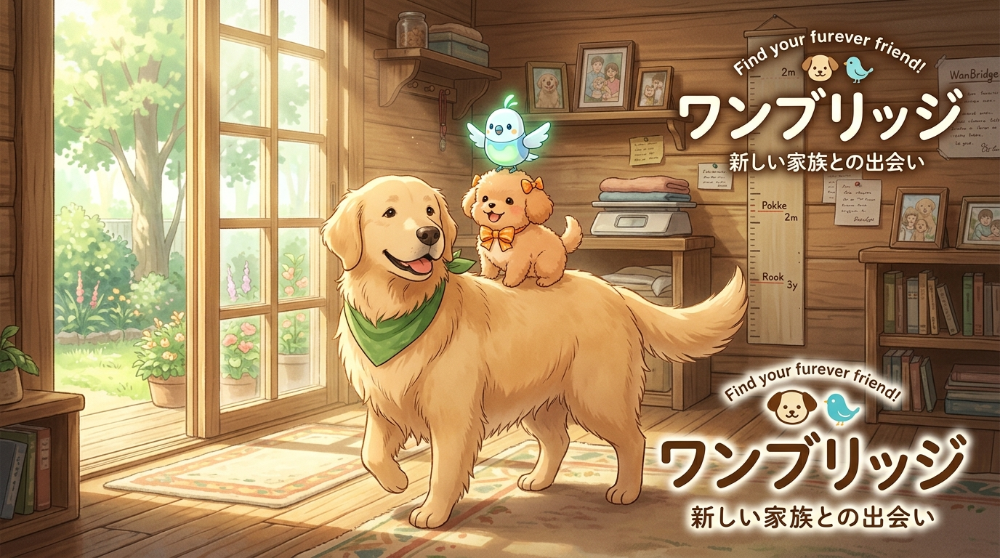
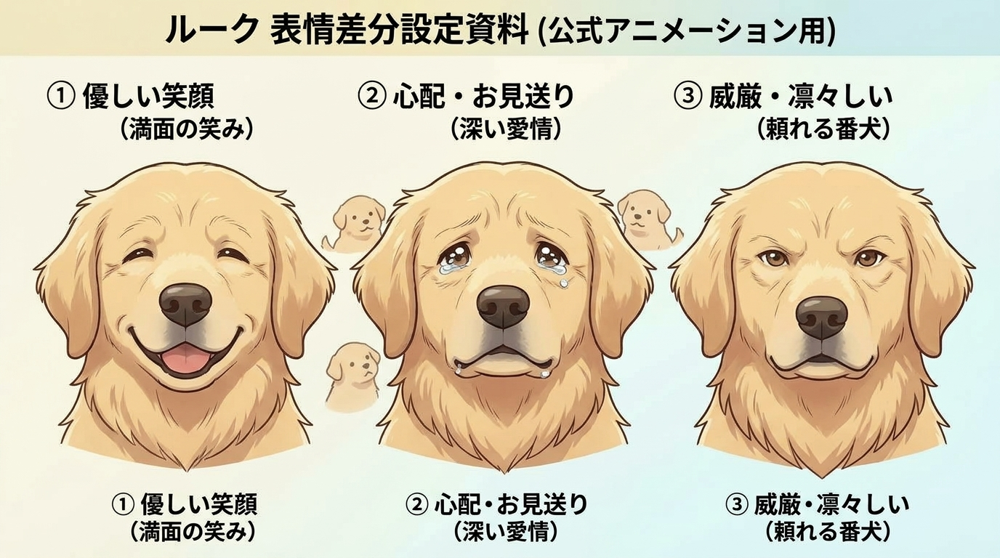

犬好きのための、
本当の安心ドッグマッチング。
「犬好きのサイト (WanBridge)」は、愛犬の健康と幸せを最優先に考えた新世代プラットフォームです。出生時・生後35日・60日・90日の実測体重と遺伝病検査を全頭公開。ブリーダー直販子犬から引退犬・保護犬・シニア終生伴走まで安心の出会いをお届けします。

「探している条件」を登録して、提携優良ブリーダーから優先案内！
ご希望の犬種（タイニープードル・豆柴等）・毛色・予算を事前登録いただくと、一般公開前の健康な子犬を優先案内いたします。プロスタッフによる見学同行サポート ＆ お迎え初月30日間の無償ペット保険が付帯します。
🐾 成犬サイズAI予測計算 ＆ 失敗しない犬選び無料診断
「生後30日の可愛い写真だけで決めていませんか？」成犬時の推定体重・骨格・性格適性を無料診断。ご希望条件（タイニー確定・遺伝子クリア等）に合致する未公開子犬が誕生次第、LINEで優先通知いたします。
「嘘のない繁殖と育成を、自ら体現する。」
全頭デジタル体重計ログ・遺伝子検査原本開示・お留守番しつけ完了
WanBridgeの最高品質基準（4大実測体重ログ・全頭遺伝子クリア・ケージ内トイレ定着率90%・夜鳴きゼロ）を自社犬舎で徹底実践。見学は完全事前予約制にて承っております（東京都足立区千住）。
東京都足立区千住（完全予約制）
お迎え相談・見学受付中

命を育んだ親犬たちに、穏やかな第二の犬生を。WanBridgeの引退犬里親制度
過去の病歴、定期健診、マイクロチップ登録証を全頭事前開示します。
避妊・去勢手術および狂犬病・混合ワクチンの接種を完了してお渡し。
生涯出産6回以内規制を厳格遵守。無理な繁殖のない健全な引退犬のみ。
ご自宅の環境や先住ペットとの相性を2週間じっくり確認できます。
なぜWanBridgeなら、後悔しない家族に出会えるのか？
既存の一般的な子犬マッチングサイトや里親募集掲示板が抱える「写真放置」「サイズ乖離」「保証の不透明さ」「諸経費トラブル」を徹底改善しました。
4大実測体重 ＆ 成長曲線
他社: 「タイニーと聞いていたのに5kg超えた」トラブル多発。
WanBridge: 0日/35日/60日/90日のデジタル体重計証憑と成犬予測モデルを全頭公開。
イエローマーク（写真鮮度保証）
他社: 生後30日の可愛い写真のまま生後半年まで放置。
WanBridge: 25日以上未更新は自動で警告点灯。1タップで最新写真を要請可能。
最長365日生命保証 ＆ 医療補償
他社: 30日〜90日のみ、または有償オプション。
WanBridge: 先天性障害・感染症の全額返金＋30日間無償ペット保険を標準付帯。
遺伝病検査 ＆ パテラ 100%完全義務化
他社: 任意開示のため未検査・隠蔽のリスク。
WanBridge:
3大主要遺伝病（PRA・DM・vWD1）全項目クリア証明書と膝蓋骨脱臼（パテラ）の全頭診断書提示を完全義務化。未検査生体の出品・掲載を全面禁止。
提携サテライト拠点受取 順次拡大予定
他社・遠方取引: 動物愛護法の対面義務のため、遠方犬舎までの高額交通費や移動負担が大きい。
WanBridge: まずは北千住古民家拠点・関東エリアから開始し、主要都市提携ハブへ順次拡大予定（移動負担を最小化）。
里親実費領収書 ＆ エスクロー決済
一般的な掲示板・個人間取引等: 不透明な諸経費現金請求や金銭トラブルが多発。
WanBridge: 動物病院の領収書明細必須＋エスクロー事前預かりで金銭トラブルを根絶。
「仮名称＆LINEカルーセル照合」で、複数頭の体重・写真を15秒登録！
スマホで撮った写真をLINEに送るだけ。「青リボンくん」を1タップして体重を入れたら登録完了。AI動画生成と全SNS自動投稿・見学者への即時配信まで完全自動化されます。

社会化期の育成達成カルテ編集
対象: 青リボンくん